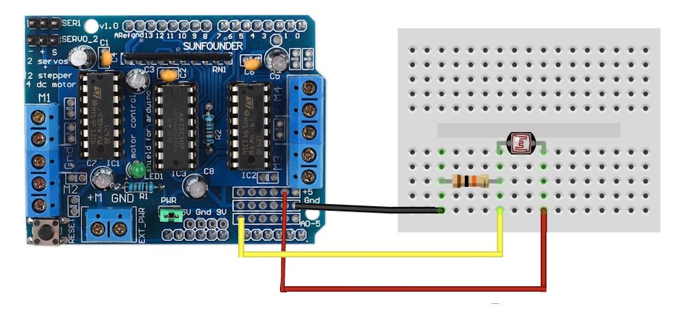
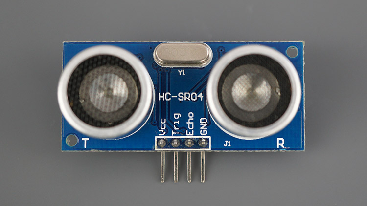
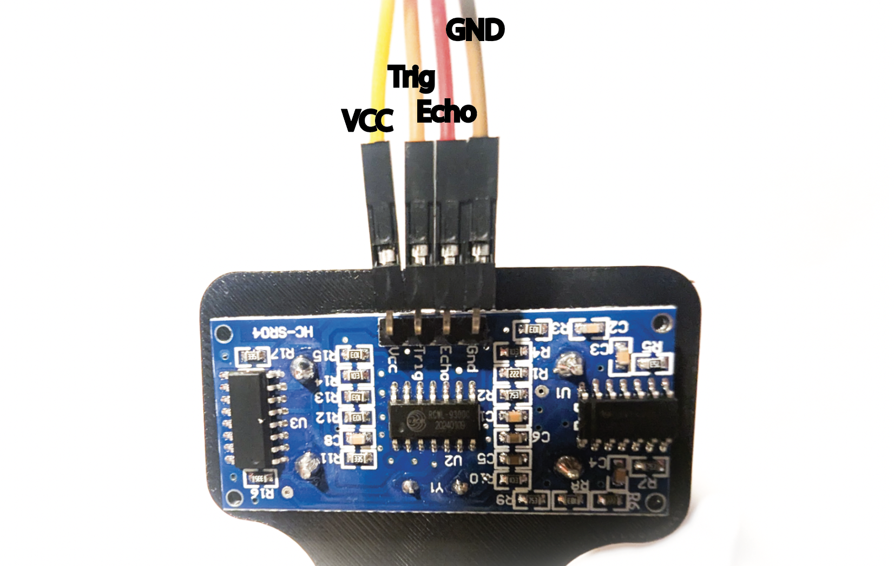
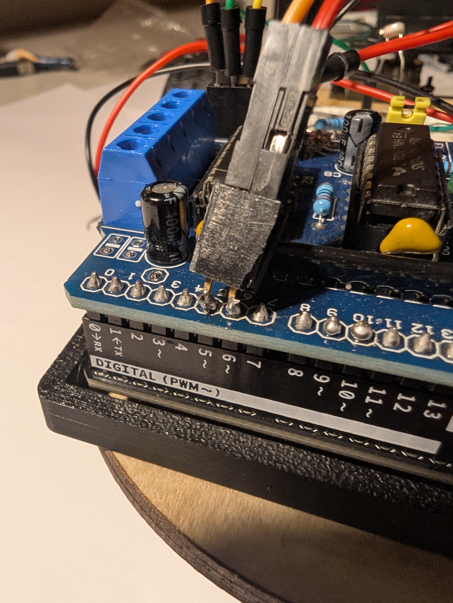
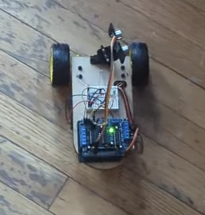

Total Time: 2.5 hours
Quick Links
- Introduction & Safety
- Fabrication Quest
- Software & Hardware for the Lab
- Part (1): Reading Values from Photoresistors
- Part (2): Determining Ambient Light
- Part (3): Writing a Nicer Motor Function
- Part (4): Light Following BANG-BANG
- Part (5): Light Following Proportional Controller
- Part (6): Ultrasound Connection
- Part (7): Using the Ultrasound
- Part (8): Wall Following
- Part (9): Remix Sensor
Lab 8: Building a Mr. Roboto (Part-2): Sensors!

This is the second in a series of two labs that will introduce you to building and programming your own robot. In this lab, we’ll extend the functionality of your robot by adding sensors, allowing it to interact with its environment.
You’ll start by integrating photoresistors to guide your robot toward the brightest 🌟 light 🌟.
Then, you’ll choose another sensor to give your robot additional behaviors, such as obstacle avoidance or wall following. By the end of the lab, your robot will sense and adapt to its surroundings autonomously.
🦺 Safety and Important Tips
(1 minute read)
The voltages and currents we are using are not capable of being harmful, but there are infinite ways to fry your circuit.
Always follow these tips as you complete this and future labs:
- Unpower your circuit when making any change
- Double check your wiring before plugging in
- When soldering, check for bridges between pads
- Many of the components are cheap/fragile, use them only as instructed
🔨 Fabrication Quest of the Day
- Today, you will use sensors to do closed-loop control of your robotic car:
- Understand how to read values from various sensors with your Arduino
- Use photoresistors to guide the robot toward light
- Implement a new behavior using an additional sensor
🏗️ Software & Hardware
Software:
- Arduino IDE
Hardware:
- Assembled Mr. Roboto from previous lab
- Ultrasonic Sensor
- Ultrasonic Bracket
- Jumper Wires
- Photoresistors (3x)
- 10kOhm Resistors (3x)
- Flashlight (x1)
- Misc sensors for Remix (color, IMU, ultrasonic etc)
Machines:
- Soldering Iron
Part (1): Reading Values from Photoresistors (1 hour)
It's time we used our Arduino to sense the outside world!
There are hundreds of different types of sensors we could use, but we are going to start with the most simple. The principles we learn here will apply to implementing all sensors with Arduino.
Our first sensor is a photoresistor. A photoresistor is a special type of resistor whose resistance depends on the amount of light that shines on it. Its resistance decreases as light increases. It's simple, affordable, and perfect for detecting brightness, such as guiding a robot toward light..
⚠️Unplug your Arduino when breadboarding ⚠️
- On the breadboard atop your Mr. Roboto, wire your photoresistor and 10kOhm resistor as shown in the circuit diagram below.
- The yellow wire is going to A0 (analog input)
- Red to 5V
- Black to Gnd
This has created a voltage divider. Because the resistance of the photoresistor changes with light, it will change the voltage at A0.

- Now we can read the resistance value through the analog pin A0. It will be converted to an integer between 0-1023. Write the following code to your Arduino.
- What is the ambient value in the room? Try shining your flashlight directly on it. What is the largest value you can achieve?
- Next, add 2 more resistors and photoresistor pairs, wiring to A1, and A2. Ensure you have spaced them out and angled them slightly forward. Refer to the images below
- Adjust the following code to print the new values. How consistent are the values between each photoresistor?
// Pin assignments for photoresistors
const int Photoresistor = A0;
void setup() {
Serial.begin(9600); // Initialize Serial Monitor
}
void loop() {
// Read light intensity from photoresistors
int photoValue = analogRead(Photoresistor);
// Print sensor values to Serial Monitor for debugging
Serial.print("PhotoResistor: ");
Serial.println(photoValue);
delay(20);
}
Checkoff 1
Ask your instructor for a check-off on adding and testing your photoresistor. Show the serial monitor with the values, and answer question on largest value for ambient room light!
// Pin assignments for photoresistors
const int rightPhotoresistor = A0;
const int middlePhotoresistor = A1;
const int leftPhotoresistor = A2;
void setup() {
Serial.begin(9600); // Initialize Serial Monitor
}
void loop() {
// TODO: Read light intensity from photoresistors
int rightValue = ;
int middleValue = ;
int leftValue = ;
// TODO: Print sensor values to Serial Monitor
delay(20);
}
Checkoff 2
Show the serial monitor with the values of the photoresistors, and answer instructor question on why additional photoresistors were added.Part (2): Determining Ambient Light (10 minutes)
Now we can read the values from our photoresistor. Before we write an algorithm for our robot to follow a bright light, we should clean our sensor data. Our algorithm will decide
the driving direction based off differences between sensors, so we want to amplify the difference.
A bright room will have high base values for all sensors and the change from a flashlight will be relatively small.
We will subtract the ambient value from the sensors.
Write the values for the ambient values of each sensor. Put above setup()
// Threshold for ambient light and minimum variation to move
const int ambientThresholdR = ;
const int ambientThresholdM = ;
const int ambientThresholdL = ;
Subtract it from the analog reading in the loop().
// Read light intensity from photoresistors
int rightValue = analogRead(rightPhotoresistor) - ambientThresholdR;
int middleValue = analogRead(middlePhotoresistor) - ambientThresholdM;
int leftValue = analogRead(leftPhotoresistor) - ambientThresholdL;
Checkoff 3
Ask your instructor for a check-off on completing Part (2). Show the serial monitor with the adjusted values of the photoresistors.Part (3): Writing a Nicer Motor Function (20 minutes)
Now, explicitly having to set motor direction every time we want to reverse is inefficient. Let's make a more convenient function that can command our motors from a range of -255 to 255 instead of 0-255.
Fill in the if/else conditions below and place these functions at the bottom of the script.
void setLeftSpeed(int value) {
if (value > ??) {
leftMotor.setSpeed(value);
leftMotor.run(FORWARD);
} else if (value < ??) {
leftMotor.setSpeed(-value); // Convert to positive speed
leftMotor.run(BACKWARD);
} else {
leftMotor.run(RELEASE); // Stop the motor
}
}
void setRightSpeed(int value) {
if (value > ??) {
rightMotor.setSpeed(value);
rightMotor.run(FORWARD);
} else if (value < ??) {
rightMotor.setSpeed(-value); // Convert to positive speed
rightMotor.run(BACKWARD);
} else {
rightMotor.run(RELEASE); // Stop the motor
}
}
We can call our function in the same way we call any other function. Now, for the sake of testing, we will change the speed/direction of the left and right motors depending on the values of the left and right photoresistors. This allows us to test our new function. Add the following lines to your script. When you shine your light on the left/right photoresistor, the left/right motor should spin forward, and when you cover the left/right photoresistor, the left/right motor spin backwards.
setLeftSpeed(leftValue); // left photoresistor value
setRightSpeed(rightValue); // right photoresistor value
Checkoff 4
Ask your instructor for a check-off on completing Part (3). Show the motor speed changes in response to the photoresistor values.Part (4): Light Following BANG-BANG (15 minutes)
The field of robotics control is enormous. The robot we have made is simple, but with good sensors and control it can exhibit complex behavior such as light following and wall following. We will start with a controller called a BANG-BANG controller and then move to a proportional controller. The code for these controllers is relatively brief but most of the work comes from tuning their constants for better performance. For best performance, you should copy your straight line speeds from the previous lab into the base speeds here.
Bang-Bang Controller.This controller detects which directions has higher light intensity and applies a constant "speed-boost" to one of the motors to turn in the required direction. When there is little variation between the photoresistors or the overall light level is too low, the motors are turned off. Adjust the variation threshold and bang constant.
const int variationThreshold = 50; // Minimum difference between sensors to trigger movement
const int bang = 50;
void setup() {
Serial.begin(9600); // Initialize Serial Monitor
// Set initial motor speed
setLeftSpeed(); // TODO: Copy speed from previous section
setRightSpeed();
}
void loop() {
// Read light intensity from photoresistors
int rightValue = analogRead(rightPhotoresistor) - ambientThresholdR;
int middleValue = analogRead(middlePhotoresistor) - ambientThresholdM;
int leftValue = analogRead(leftPhotoresistor) - ambientThresholdL;
// Print sensor values to Serial Monitor for debugging
Serial.print("Left: ");
Serial.print(leftValue);
Serial.print(" Middle: ");
Serial.print(middleValue);
Serial.print(" Right: ");
Serial.println(rightValue);
// TODO: Calculate the average light level
int averageLight = ;
// Determine if there is little variation in light intensity
int maxDifference = max(abs(middleValue - leftValue), abs(middleValue - rightValue));
// Light is ambient or too uniform; stop the robot (Hint: || is OR)
if () {
setLeftSpeed(0);
setRightSpeed(0);
} else if () {
// Middle light is greater than left AND right (Hint: && is AND)
setLeftSpeed(100);
setRightSpeed(100);
} else if () {
// Brightest light is to the left; turn left
setLeftSpeed(100);
setRightSpeed(100 + bang);
} else if () {
// Brightest light is to the right; turn right
setLeftSpeed(100 + bang);
setRightSpeed(100);
}
delay(50); // Small delay for stability
}
Checkoff 5
Ask your instructor for a check-off on completing Part (4). Show the robot following the light.Part (5): Light Following Proportional Controller
Proportional control is the first step of a PID controller (a classic controller used all over robotics). This controller changes the size of the speed boost based off the amount of light intensity deviation between the middle and sides. The response is proportional to the error instead of a constant value like in BANG-BANG. Here, the error is the amount by which one side is greater than the middle. The new constant to adjust is the proportional constant which multiplies this error to result in a motor command. We will change the proportional constant for a stronger/weaker response.
const float Kp = 1.0; // Proportional gain for the controller VALUE TO CHANGE
const int BASE_SPEED = 80;
void setup() {
Serial.begin(9600); // Initialize Serial Monitor
}
void loop() {
// Read light intensity from photoresistors
int rightValue = analogRead(rightPhotoresistor) - ambientThresholdR;
int middleValue = analogRead(middlePhotoresistor) - ambientThresholdM;
int leftValue = analogRead(leftPhotoresistor) - ambientThresholdL;
// Print sensor values to Serial Monitor for debugging
Serial.print("Left: ");
Serial.print(leftValue);
Serial.print(" Middle: ");
Serial.print(middleValue);
Serial.print(" Right: ");
Serial.println(rightValue);
// Calculate the average light level
int averageLight = ;
if () {
// Light is ambient or too uniform; stop the robot
setLeftSpeed(0);
setRightSpeed(0);
} else {
// Calculate error signals for proportional control
if (leftValue > rightValue) {
int error = middleValue - leftValue;
}
else{
int error = - (middleValue - rightValue);
}
// Calculate motor speeds based on proportional control
int leftSpeed = BASE_SPEED + Kp * error;
int rightSpeed = BASE_SPEED - Kp * error;
// Set motor speeds and directions
setLeftSpeed(leftSpeed);
setRightSpeed(rightSpeed);
}
delay(50); // Small delay for smoother control
}
Part (6): Ultrasound Connection
While the photoresistors are a rather simple sensor, the framework we have made will allow us to slot in another more complex sensor. We will use a ultrasonic distance sensor to follow a wall. The ultrasonic sensor we are using is the HC-SR04. It has a range of up to 400cm. Get it, its servo mount and 4 long M-F jumper wires.
Unfortunately, the motor shield blocks our access to the digital PWM pins which we need for this sensor. Its not elegant, but we can solder a double female header to the back pins. UNPOWER YOUR SYSTEM. Have an instuctor help you do this to pins 5 and 6. Then, plug the HC-SR04 Vcc, Trig, Echo, GND into 5v, pin 5, pin 6, and GND respectively.
Checkoff 7
Ask your instructor for a check-off on completing Part (6). We will check correct wiring.Part (7): Using the Ultrasound
This is a very common sensor and there are many tutorials of how to use it online. You will rarely know exactly how to program a sensor from memory. Use the internet to make/find a function called measureDistance() that returns an integer of the distance from the ultrasonic sensor. Then, upload the following code and move your hand in front of the ultrasonic sensor and make sure it responds as you expect.
// Pin assignments for HC-SR04
const int trigPin = 5; // Trigger pin
const int echoPin = 6; // Echo pin
void setup() {
Serial.begin(9600); // Initialize Serial Monitor
// Set up HC-SR04 pins
pinMode(trigPin, OUTPUT);
pinMode(echoPin, INPUT);
}
void loop() {
// Measure distance using HC-SR04
int distance = measureDistance();
Serial.print("Distance: ");
Serial.print(distance);
delay(20);
}
We know this is pretty vague, but its an important skill to learn how to use new sensors/parts.
Part (8): Wall Following
Now we can use this function and our proportional controller to track a wall. Angle your ultrasonic sensor at about 80degrees from straight forward (pointing mostly left). It is important that it is not at 90 degrees. (Mirror of the image below).
The following code follows a right wall. Alter it and tune the proportional constants to follow a left wall.
// Pin assignments for HC-SR04
const int trigPin = 5; // Trigger pin
const int echoPin = 6; // Echo pin
// Create motor objects for two motors
AF_DCMotor rightMotor(1); // Motor connected to M1
AF_DCMotor leftMotor(2); // Motor connected to M2
// Desired distance from the wall (in cm)
const int targetDistance = 25; // Adjust as needed
// Proportional control gains
const float KpLeft = 1.0; // Proportional gain for the left motor
const float KpRight = 1.0; // Proportional gain for the right motor
// Base motor speed (0-255)
const int baseSpeedLeft = 60;
const int baseSpeedRight = 60;
void setup() {
Serial.begin(9600); // Initialize Serial Monitor
// Set up HC-SR04 pins
pinMode(trigPin, OUTPUT);
pinMode(echoPin, INPUT);
}
void loop() {
// Measure distance using HC-SR04
int distance = measureDistance();
// Calculate the error
int error = targetDistance - distance;
// Calculate speed adjustments based on proportional control
int leftAdjustment = KpLeft * error;
int rightAdjustment = KpRight * error;
// Determine motor speeds
int leftMotorSpeed = constrain(baseSpeedLeft - leftAdjustment, 0, 100);
int rightMotorSpeed = constrain(baseSpeedRight + rightAdjustment, 0, 100);
// Print debugging information
Serial.print("Distance: ");
Serial.print(distance);
Serial.print(" cm Error: ");
Serial.print(error);
Serial.print(" Left Speed: ");
Serial.print(leftMotorSpeed);
Serial.print(" Right Speed: ");
Serial.println(rightMotorSpeed);
// Apply motor speeds straight movement
setLeftSpeed(leftMotorSpeed);
setRightSpeed(rightMotorSpeed);
delay(50); // Small delay for stability
}
Part (9): Remix Sensor
Now that know how to write code for a given sensor, pick a sensor/output that you think will be useful for your project and make it work. This could be spinning a stepper motor, using a temperature or color sensor, or even the IMU. If you are unsure of a direction, ask your instructor for suggestions. Below is a list of inputs and outputs you can use.
- Color sensor
- IR transmitter & reciever
- IMU
- Temperature sensor
- LCD / OLED
- Servo motor
- Stepper motor